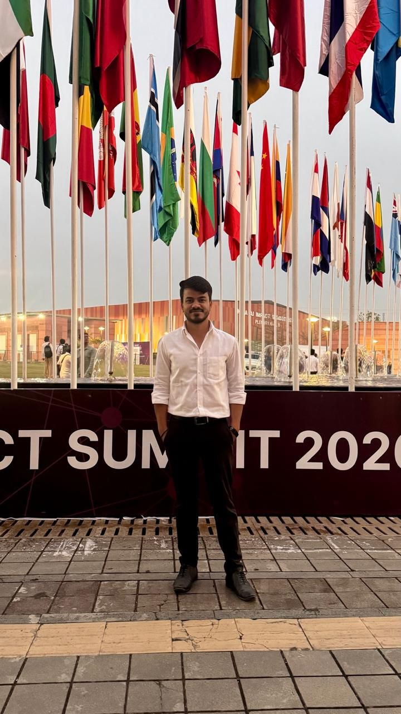
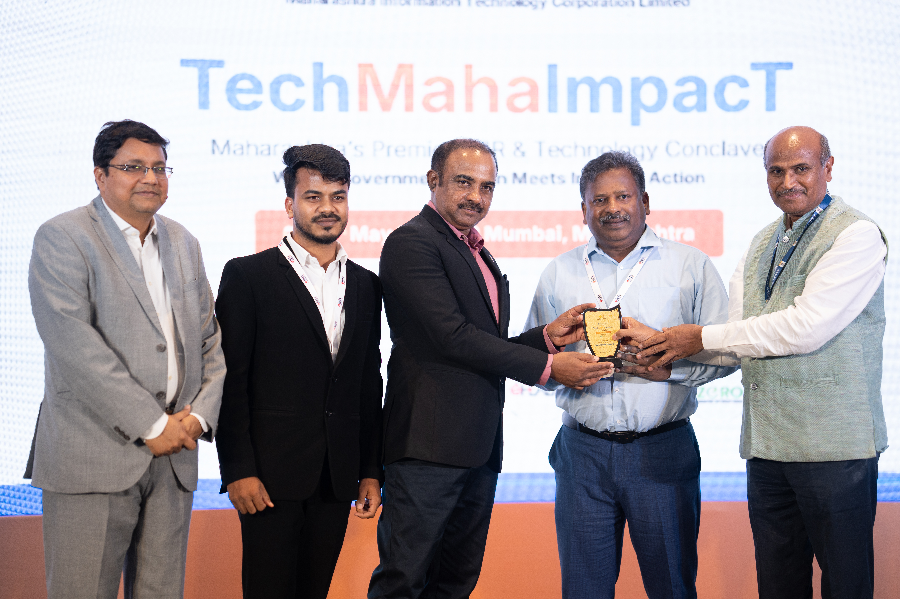

I define product strategy, align stakeholders, and personally ship the ML systems behind it — across agriculture, disaster response, and rural India.

At Reliance Foundation, I own products end-to-end — from defining requirements and aligning government and NGO stakeholders, to personally shipping the ML pipelines, APIs, and interfaces behind them. No handoff between PM and engineering. I do both.
This lets me move fast in resource-constrained environments where a 50-page PRD is less useful than a working prototype in the field.
Before AI product work, I spent six months doing cricket performance analytics at Mumbai Indians, three years preparing for UPSC (which gave me policy thinking and ground-level understanding of how India works), and time as a journalist at Times of India.
I'm looking for AI PM roles at organisations where technology is a means to measurable human outcomes — social impact orgs, international development institutions, and AI-first teams in emerging markets.
End-to-end AI systems built for real users — farmers, humanitarian workers, scholarship applicants, and field teams across India.
Product thinking backed by hands-on technical depth.
As part of the core product team at Reliance Foundation, I led technical implementation of key modules — disaster monitoring, crop disease detection, and multilingual advisory systems — that formed the backbone of these award-winning platforms.

Looking for AI PM roles in social impact, international development, and AI-first teams — India and remote globally.